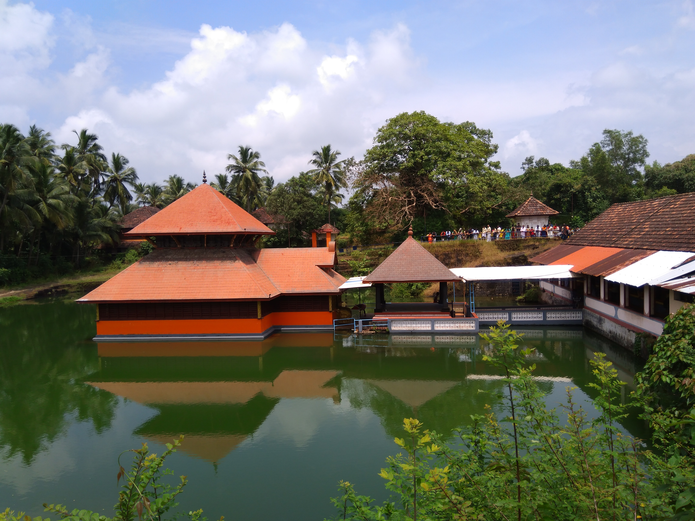
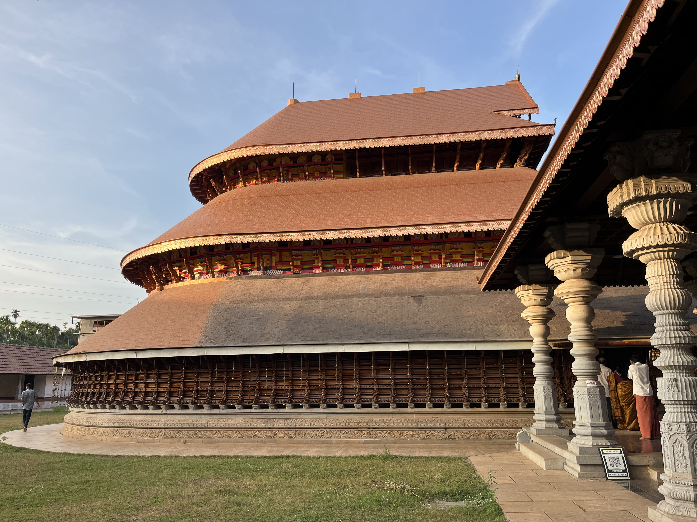

Sacred Temples of Kasaragod
Ananthapura Lake Temple

Ananthapura Lake Temple, near Kumbla, is traditionally regarded as Kerala’s only lake temple and the original seat, or Moolasthanam, of Lord Ananthapadmanabha.
The shrine stands within a natural lake and is known for its quiet setting, distinctive architecture, and the local legend of a vegetarian crocodile that guards the temple.
Ananthapura Lake Temple on WikipediaMadhur Sree Anantheswara Vinayaka Temple

Built on the banks of the Madhuvahini River, Madhur Temple is celebrated for its three-tiered dome-like form, wooden carvings, and stories connected with Lord Shiva and Lord Ganesha.
Madhur Temple on Wikipedia